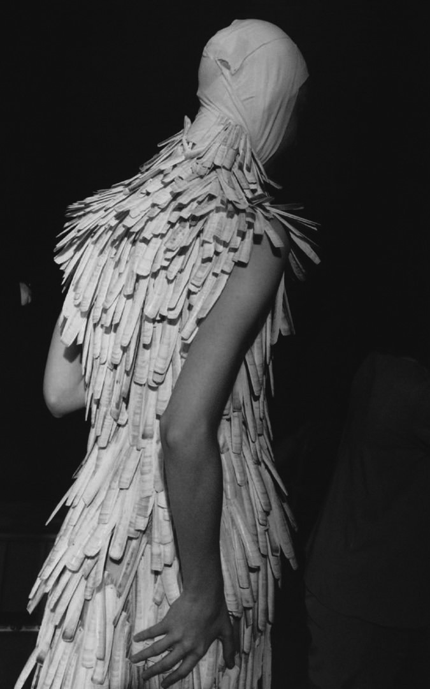

From late-Victorian mourning wear, to 20th century vampires and even Harry Potter, the extensive aesthetic and sartorial cannon of the Gothic proved to be an enduring source of inspiration for Alexander McQueen. Going hand in hand with his respect for history, the Gothic depicted the past as a time of superstition, repression and mystery, and provided McQueen with a distinct conceptual language and aesthetic in which to explore how the concerns of love, death and the supernatural played out at different points of history. The runway presentation of Voss (Spring/Summer 2001), offered one of McQueen’s most unnerving interpretations of the Gothic within a contemporary context – a recreation of a psychiatric hospital in a London warehouse, complete with padded cells and surveillance mirrors – Voss’ catwalk was inspired by Death Row.
Contemporary modes of the Gothic were also evident in The Horn Of Plenty (Autumn/Winter 2009). Taking its title from the Victorian pub in which Jack The Ripper’s final victim was last sighted, McQueen presented enlarged interpretations of his signature silhouettes on a catwalk floor of shattered glass – most notably, the ‘black swan’ dress made from dyed duck feathers. Darkly romantic, the Gothic aesthetic was pushed to extremes in the styling, where models walked the
Photograph by Anne Deniau